Tsugaru
Tsugaru · Aomori
Tsugaru
Highlighted on the Aomori map.
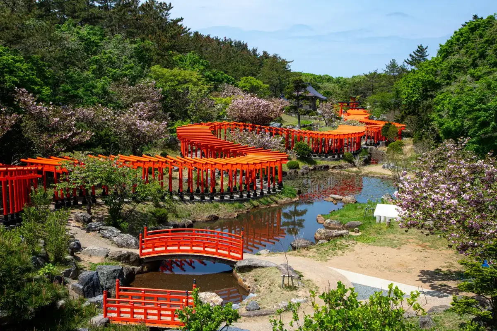
Stay
柏ロマン荘
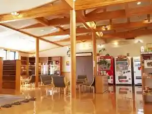
Kashiwa Roman Sou
稲垣温泉ホテル花月亭
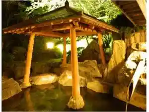
Inagaki Onsen Hoteru Kagetsu Tei
Dining
ブリキ屋
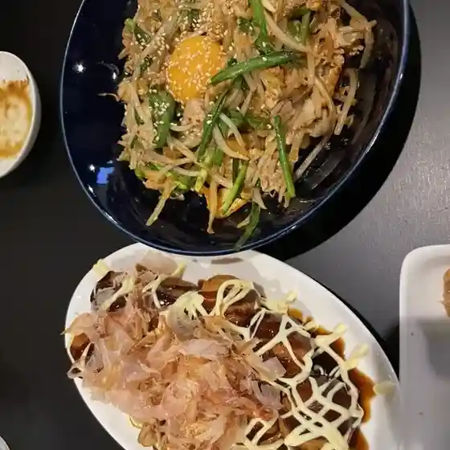
Buriki Ya
ことぶき
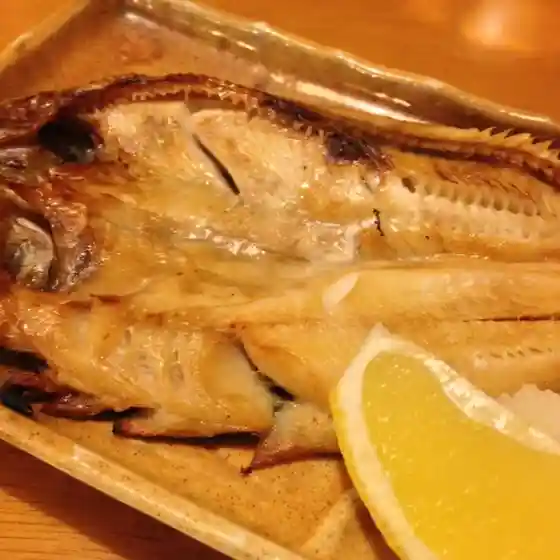
Kotobuki
パン工房 TATSUYA もりた店
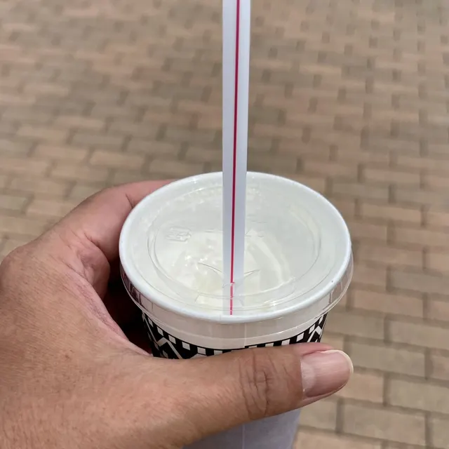
Pan Koubou Tatsuya Morita Mise
坂本おやき店
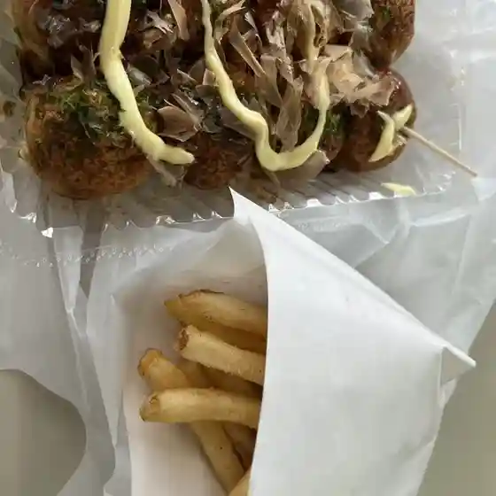
Sakamoto Oyaki Mise
和処 㐂
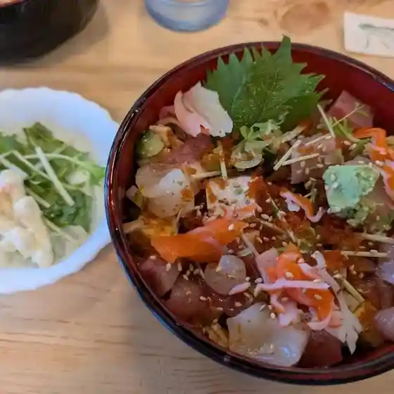
Wa Tokoro Ki
つがる市農産物直売所 じょっぱりの里
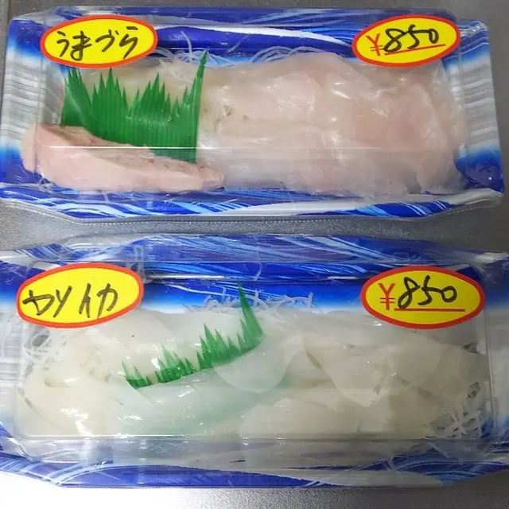
Tsugaru Shi Nousanbutsu Chokubai Tokoro Jopparino Sato
しゃこちゃん温泉
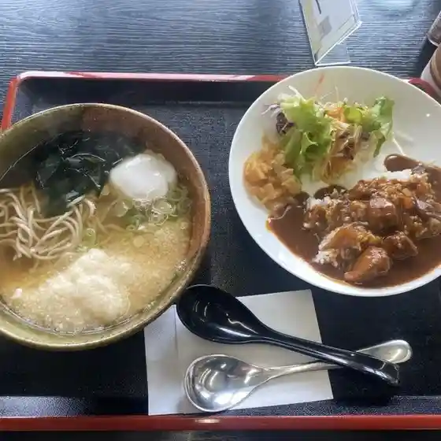
Shakochan Onsen
山口食堂
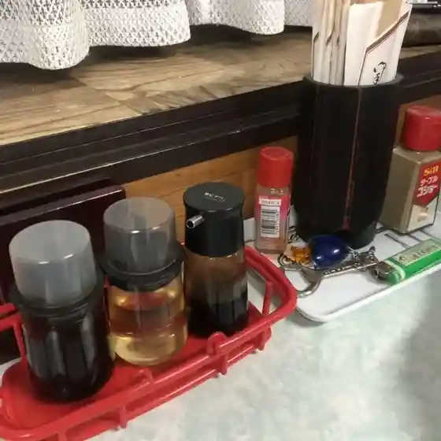
Yamaguchi Shokudou
セブンイレブン つがる柏
Sebun'Irebun Tsugaru Kashiwa
柏ロマン荘
Kashiwa Roman Sou
スパゲティハウスささたけ
Supageteihausu Sasatake
焼肉居酒屋 炭香
Yakiniku Izakaya Sumi Kaori
ホブソンズ イオンモールつがる柏店
Hobusonzu Ionmooru Tsugaru Kashiwa Mise
かめがい
Kamegai
ラーメンまるじん
Raamen Marujin
から揚げ専門店 こばしょぐ イオンモールつがる柏店
Kara Age Senmonten Kobashogu Ionmooru Tsugaru Kashiwa Mise
一番食堂
Ichiban Shokudou
ドレミ食堂
Doremi Shokudou
車力村むらおこし拠点館「フラット｣
Shariki Mura Muraokoshi Kyoten Kan ( Furatto Furatto
中華そば だいき屋
Chuuka Soba Daiki Ya
野のこ
No Noko
ラーメンショップ
Raamenshoppu
ナン・カレーハウス イオンモールつがる柏店
Nan Kareehausu Ionmooru Tsugaru Kashiwa Mise
たいま菓子店
Taima Kashi Mise
Sights
Azumashi no Sato Onsen Iiyudana
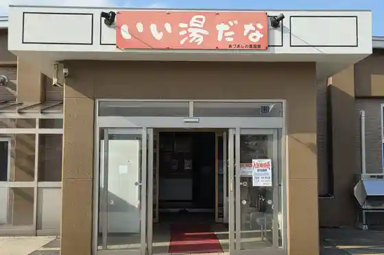
Hot spring with cashless payment and early morning bathing.
Japan's Oldest Apple Trees
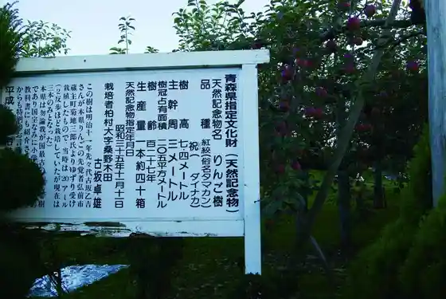
Apple trees planted in 1878 and designated a prefectural natural monument.